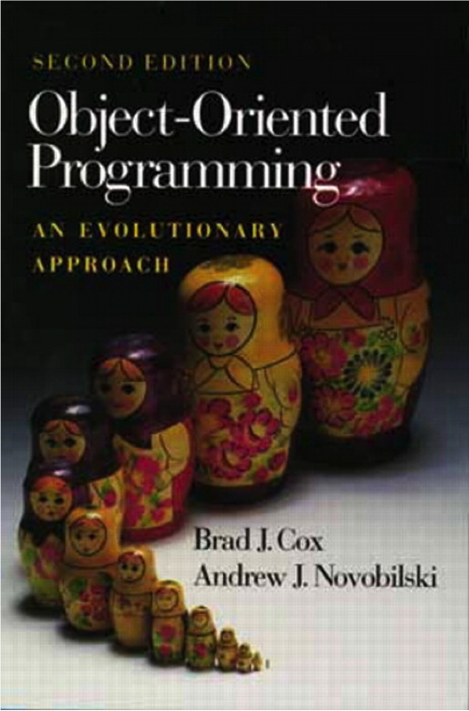

Лекция №11
Swift
Николай Морев
История Objective-C

Начало 80-х
Авторы языка – предприниматели, исключительно практические соображения
C + Smalltalk
Совместимость с C – критически важна
Идеи из Smalltalk – гибкость и удобство разработки